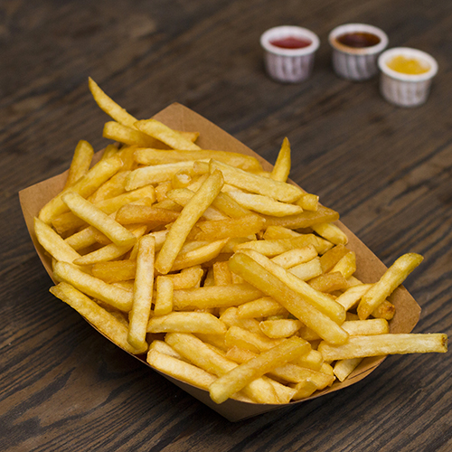
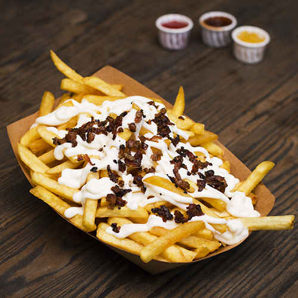

Papas Grandes 🍟😋
Exquisitas papas fritas para compartir con amigos o comer solo, lo maa clasico de lo clasico, pero con un toque de nuestra casa que los ahcen inperdibles.
Papas Gringas 🍟😋
Desde otro continente! hacia tu paladar, disfruta estas ricas papas con el estilo gringo , que contienen una salsa de mayonesa por encima con cebolla salteada y picada por encima, que te volara la cabeza!